Envie d'un peu de lecture un soir d'hiver ? Ou de vous remémorer un bon mot du mariage pour un prochain discours ?
Retrouvez ici les textes qui nous ont donné tant d'émotion :
texte de Sylviane
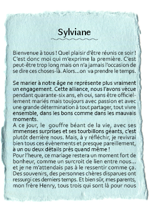
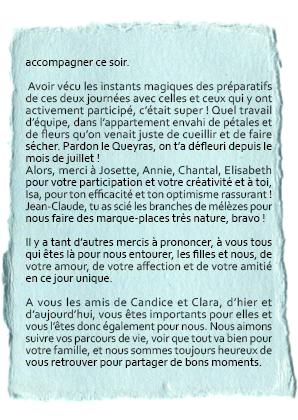
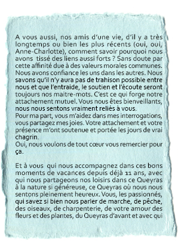
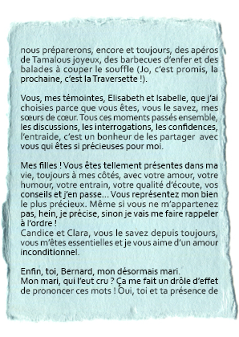
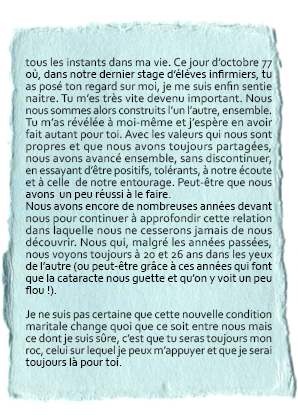
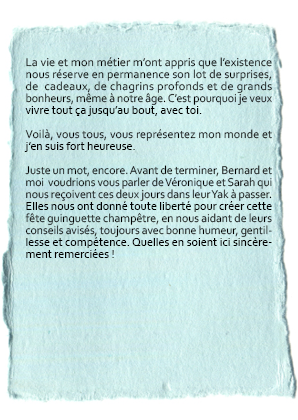
texte de Clarisse
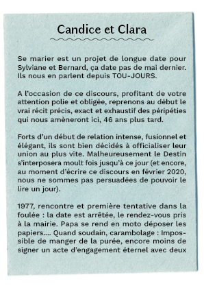
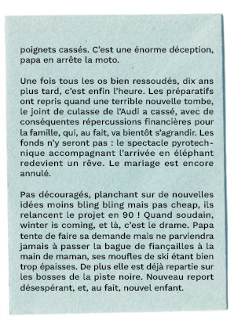
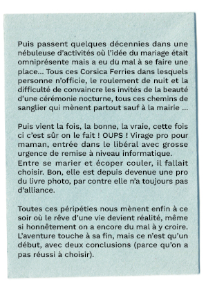
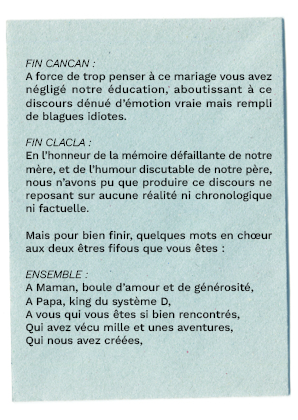
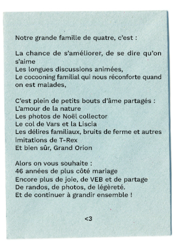
texte d'Isabelle
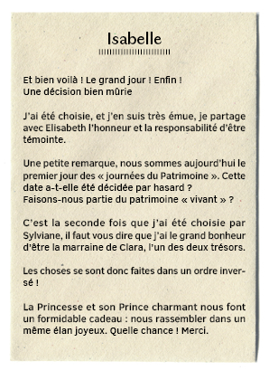
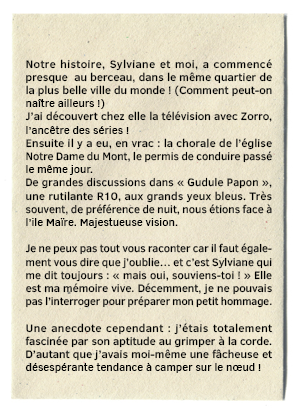
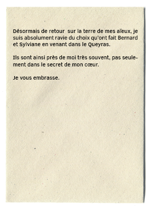
texte d'Elisabeth
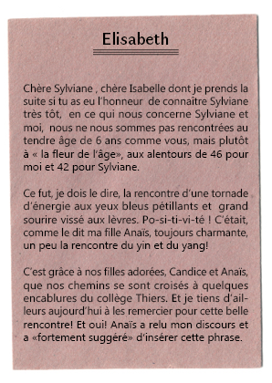
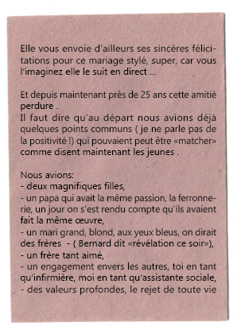
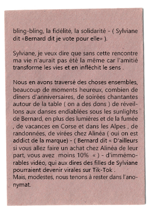
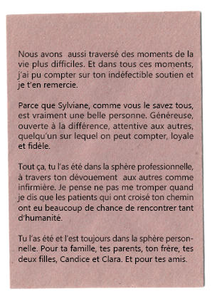
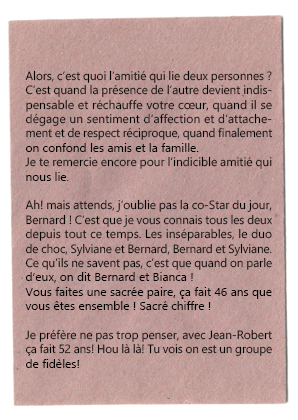
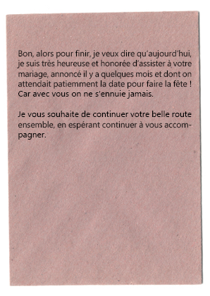
texte de Jean-Robert
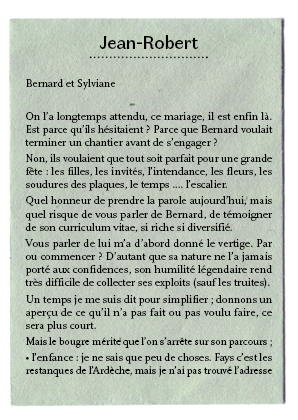
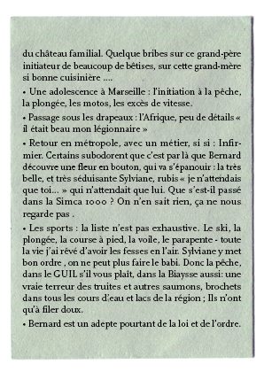
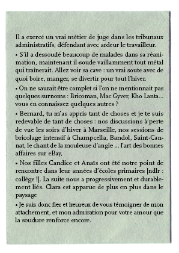
texte de Marie
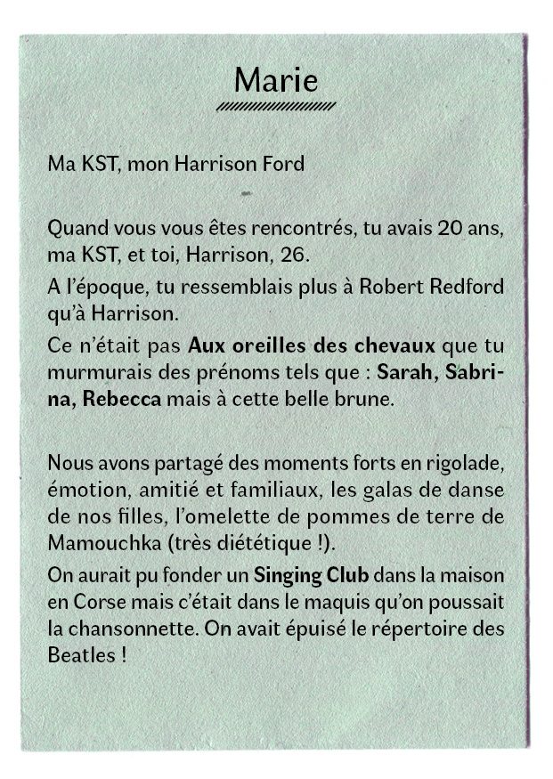
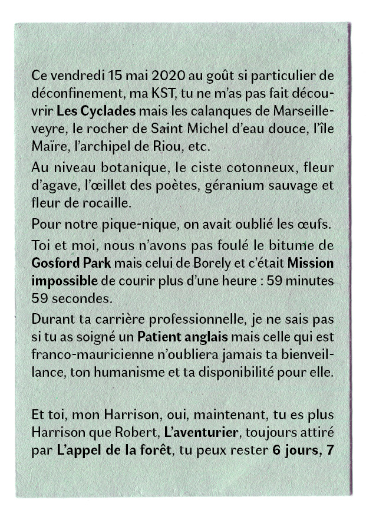
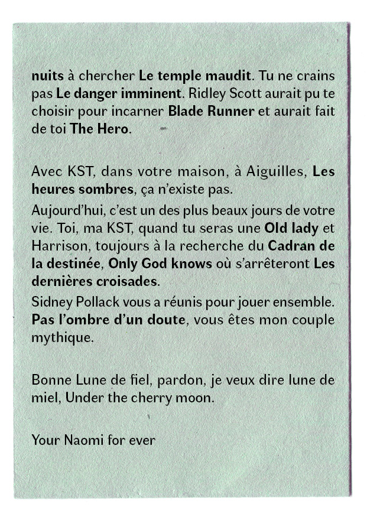
texte d'Annie
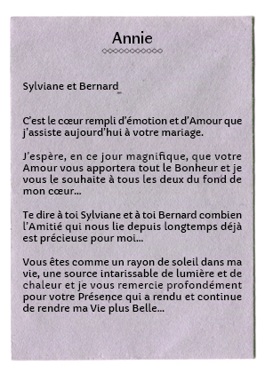
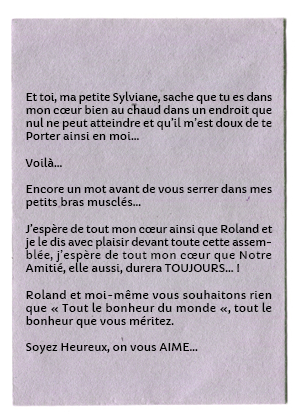
texte de Françoise
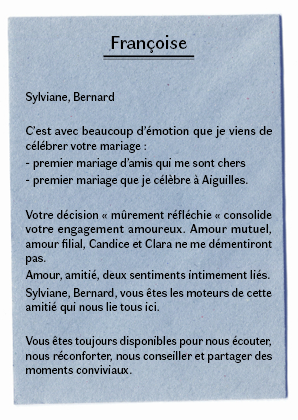
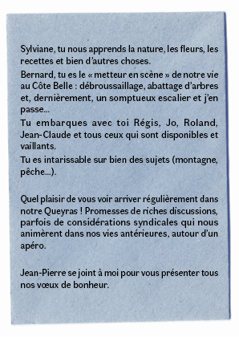
Et en bonus, le
texte de la chorale ! Compositrice : Sylviane ; écrite en l'honneur des valeureux no-killers Roland et Thomas, qui ont transmis la passion de la pêche à Bernardo !